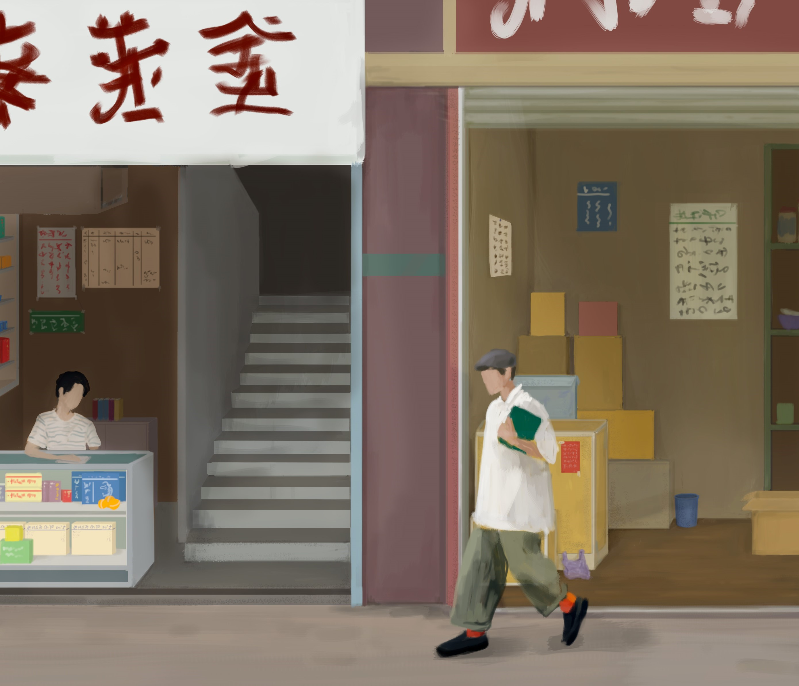
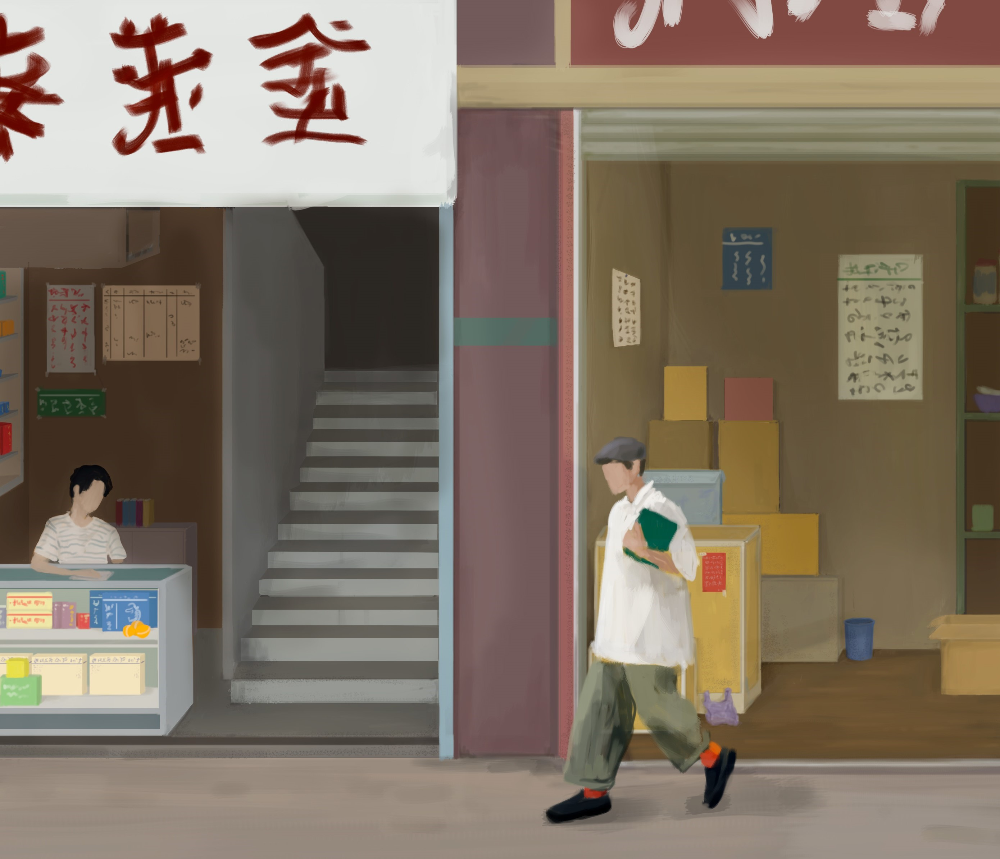

Иллюстрации для проекта «China today» в рамках ежегодного китайского фестиваля
Проект «China today» является частью ежегодного китайского фестиваля, на который приглашены художники-иллюстраторы со всего мира. Моя задача – создать иллюстрации для этого проекта.
 

Первым этапом работы над проектом был сбор информации и изучение традиций и культуры Китая. Далее я начал разрабатывать концепцию и выбирать композиции для иллюстраций.
Следующим шагом было создание рисунков на бумаге, в которых я отразил все главные идеи и темы, связанные с современным Китаем.
Однако, чтобы иллюстрации ожили и зажили своей жизнью, был необходим цифровой редактирование. Я использую графический планшет для создания иллюстраций с высоким качеством и детализацией, используя программы Adobe Photoshop и Adobe Illustrator.
Таким образом, мое творчество и творчество членов команды создает проект «China Today», который является ярким примером культурного обмена и сотрудничества между нашими странами.